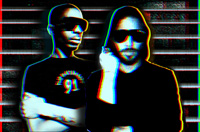

CROSSTOWN REBELS/NO. 19
http://www.myspace.com/artdepartment
Art Department is the brainchild of Canadian techno/house Legend Kenny Glasgow and Canada’s fastest rising star and No.19 label owner - Jonny White. As individuals both Kenny and Jonny have released countless critically acclaimed records and are regarded internationally as two of the most forward thinking, revolutionary underground producers out of North America. Kenny’s credentials date back to the late 80’s and include productions on Narcotic, Jinxx, his own Method 11/11 label and Turbo. Whilst White’s revered No.19 Music label along side a blindingly fast - growing discography have seen him rapidly rise to the forefront of the international scene.
The pair, despite being close friends and stalwarts in the Toronto electronic music scene for years, had not joined forces in the studio until only as recently as 2009, when Damian Lazarus called on them to remix Riz MC for his prestigious Crosstown Rebels Label. The result was an entirely new sound that drew cues from the best of both artists. It was a futuristic and raw, synth-driven, underground masterpiece, the start of a new idea and the birth of Art Department…
Before long the two were working full time in the studio to expand upon what they had created but now with a new focus… the concept for Art Department was to create a live dj/vocal performance based on the new sound they were beginning to produce and would feature Kenny Glasgow’s unique and sublime vocals that had been heard only 10+ years earlier on records like “Pressing On”. It wasn’t long before Damian heard what the pair had been working on and immediately offered them a deal with Crosstown Rebels that would include several singles, remixes and a full length album due out at the beginning of 2011.
The momentum continued and Art Department performed their first ever live show at the Crosstown Rebels Get Lost event at the 2010 WMC in front of a jam packed room, along side an A list cast of 17 artists from the label. DJ’s, promoters and party animals regarded the performance as one of the most ground-breaking & important shows at this years WMC…Simple label boss - Will Saul was quoted saying “the live show was the best thing we’ve heard since we heard Mathew Johnson for the first time…”. The follow up performance came the very next night at Jamie Jones & Lee Foss’ Hot Natured party where Art Department treated the enthusiastic crowd to a mind-bending dj set and secured their spot as residents for the much lauded Hot Natured brand.
With massive support from the rebel crew along with an exciting release schedule including collaborations with Seth Troxler, Jamie Jones and Soul Clap there is no doubt that this will be yet another inspired chapter in the story of these Canadian talents.
Art Department_Promo Mix by JazzMostWanted